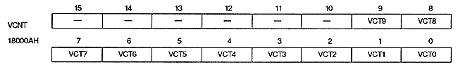

Graphic | HCT9 | HCT8 | HCT7 | HCT6 | HCT5 | HCT4 | HCT3 | HCT2 | HCT1 | HCT0 |
Normal | H8 | H7 | H6 | H5 | H4 | H3 | H2 | H1 | H0 | Disable |
High Resolution | H9 | H8 | H7 | H6 | H5 | H4 | H3 | H2 | H1 | H0 |
Dedicated Normal | Disable | H8 | H7 | H6 | H5 | H4 | H3 | H2 | H1 | H0 |
High Resolution | Disable | H9 | H8 | H7 | H6 | H5 | H4 | H3 | H2 | H1 |

V counter value bit : V counter bit (VCT9 to VCT0), bits 9 to 0
Table 2.4 V counter register bit contents
TV screen (interlace) mode | VCT9 | VCT8 | VCT7 | VCT6 | VCT5 | VCT4 | VCT3 | VCT2 | VCT1 | VCT0 |
Normal, High-Res (Non-In | V8 | V7 | V6 | V5 | V4 | V3 | V2 | V1 | V0 | Disable |
Normal, Hi-Res, (Double Dense | V8 | V7 | V6 | V5 | V4 | V3 | V2 | V1 | V0 | 0: odd |
Dedicated Monitor | V9 | V8 | V7 | V6 | V5 | V4 | V3 | V2 | V1 | V0 |